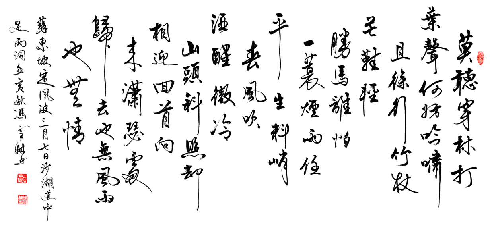

天下没有不散的筵席
Posted on 六 10 12月 2022 in Journal
| Abstract | 天下没有不散的筵席 |
|---|---|
| Authors | Walter Fan |
| Category | learning note |
| Status | v1.0 |
| Updated | 2022-12-10 |
| License | CC-BY-NC-ND 4.0 |
今年的双十二是我司宣布裁员名单的日子，不知道远在美国的高管们为什么要选择这样一个日子。一位同事和我说，这一次是 "*" 的至暗时刻。
有句话叫天下没有不散的筵席，在 IT 行业，象我这样在一家公司干了二十年的老软件工程师几乎是凤毛麟角了。
身边的人来来往往，在一起拼搏过，争辩过，欢笑过，留下过美好的时光，这就够了。
幸运的是在公司这么多年来，遇到过无数的牛人，从他们身上我学到很多，而我也没有一个敌人，有过争吵的同事也屈指可数。
而那些争吵，很少掺杂个人利益，大多是技术上的争论，记起来都是小伙伴们对技术的热情和执着，自己年青时的意气用事，和公司的同事对我的包容。
当然，有些人是很难相处的，三观不同的人也不是没有遇到过，不过这也不是什么大问题，敬而远之好了，搞技术的其实很简单，你做的设计，写的代码就在那儿，大家都看的见。
天下无不散的筵席，多少曾经在一起拼搏和战斗过的小伙伴成为了生命中的匆匆过客，就象歌里唱得那样
”天之涯，海之角，知交半零落，一壶浊酒尽余欢，今宵别梦寒“
祝他们好运，也祝愿我自己。

本作品采用知识共享署名-非商业性使用-禁止演绎 4.0 国际许可协议进行许可。